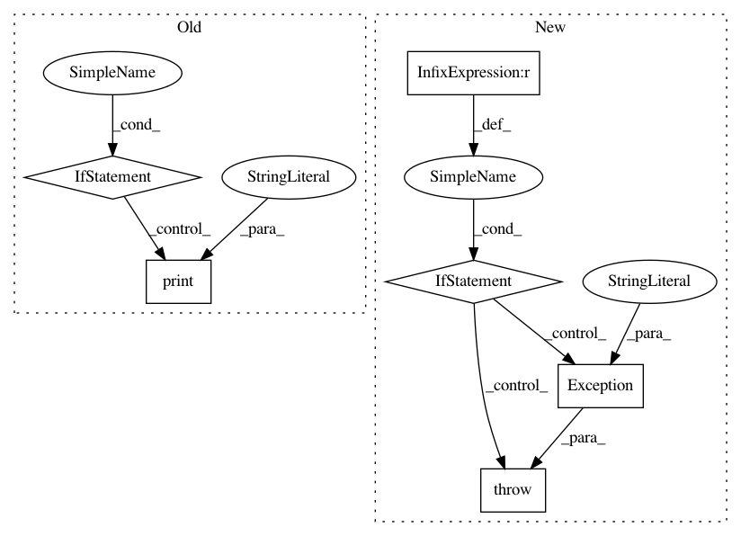

f16ea566f0565e7fb1eee3477e66e51c3ba87b1c,tools/sort.py,,,#,792
Before Change
exit(0)
if __name__ == "__main__":
__warning_string = "Important: face-cnn method will cause an error when "
__warning_string += "this tool is called directly instead of through the "
__warning_string += "tools.py command script."
print (__warning_string)
print ("Images sort tool.\n")
parser = argparse.ArgumentParser()
subparser = parser.add_subparsers()
sort = SortProcessor(
subparser, "sort", "Sort images using various methods.")
parser.set_defaults(func=bad_args)
arguments = parser.parse_args()
arguments.func(arguments)
After Change
import lib.FaceLandmarksExtractor
FaceLandmarksExtractor = lib.FaceLandmarksExtractor
if sys.version_info[0] < 3:
raise Exception("This program requires at least python3.2")
if sys.version_info[0] == 3 and sys.version_info[1] < 2:
raise Exception("This program requires at least python3.2")
class SortProcessor(object):
def __init__(self, subparser, command, description="default"):
self.arguments = None
In pattern: SUPERPATTERN
Frequency: 3
Non-data size: 6
Instances
Project Name: deepfakes/faceswap
Commit Name: f16ea566f0565e7fb1eee3477e66e51c3ba87b1c
Time: 2018-04-04
Author: 36920800+torzdf@users.noreply.github.com
File Name: tools/sort.py
Class Name:
Method Name:
Project Name: cesium-ml/cesium
Commit Name: 9df6c7659dc2a4c51367ffcf5dabb898ca87cd2c
Time: 2015-09-10
Author: a.crellinquick@gmail.com
File Name: mltsp/custom_feature_tools.py
Class Name:
Method Name: verify_new_script
Project Name: TheAlgorithms/Python
Commit Name: 023f5e092d38f7e220ae68a23f7183eeb8fd9e04
Time: 2019-05-22
Author: vargasnikolass@gmail.com
File Name: sorts/bucket_sort.py
Class Name:
Method Name: bucket_sort